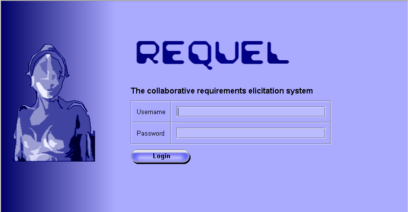

Poor requirements have been cited as the primary cause of software project failures and cost overruns. Fredrick Brooks tells us that "The hardest single part of building a software system is deciding precisely what to build."
What causes poor quality requirements and why is it so hard to acquiring requirements that are understandable, unambiguous, precise, and complete? One of the key problems in identifying requirements is a lack of stakeholder involvement. All stakeholders, including users, managers, and developers, need to be involved during requirements acquisition. Another problem is the high level of detail necessary to implement software. Most people don't think about the intricacies of the tasks they perform at a conscious level.
Requel is a requirements engineering system that supports collaboration among business and technical stakeholders and provides automated assistance to validate requirements and suggest improvements. It is a Web-based application to facilitate a distributed team of users. It supports collaboration with a semi-structured discussion and negotiation mechanism. It assists users by applying natural language processing to the requirements to detect and report ambiguity and complexity. It identifies potential significant terms in the requirements to assist in build a glossary and making the requirements more understandable and consistent.